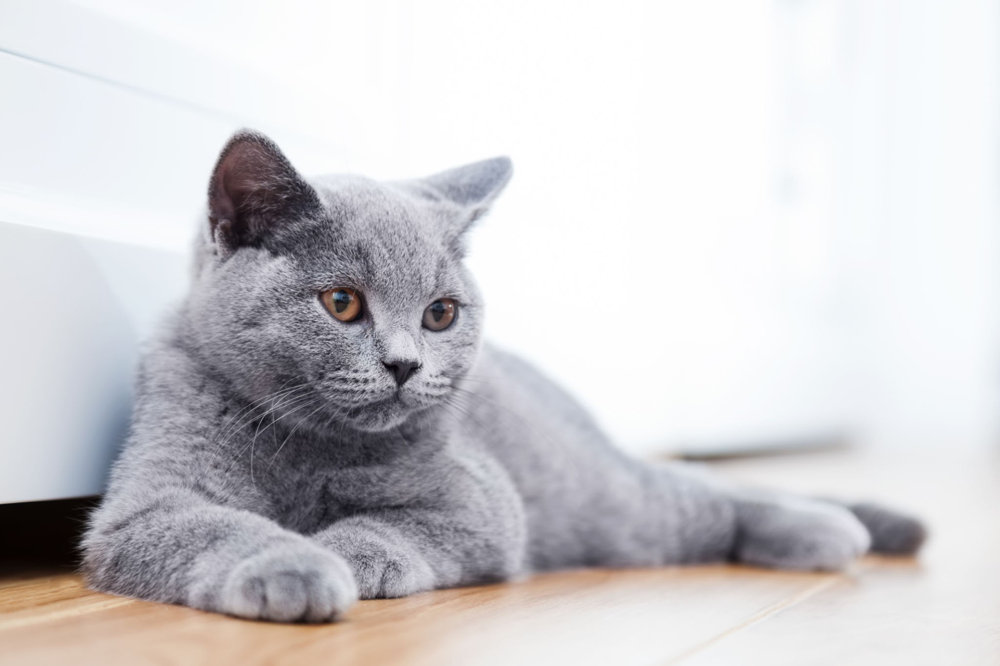

( แมว )

แมว
(
ชื่อวิทยาศาสตร์
:
Felis catus
) เป็น
สปีชีส์
สัตว์เลี้ยง
ของ
สัตว์เลี้ยงลูกด้วยนม
กินเนื้อ
ขนาดเล็ก
[1]
[2]
โดยเป็นแมวสปีชีส์เดียวในวงศ์
Felidae
ที่ถูกปรับเป็นสัตว์เลี้ยง และมักเรียกเป็น
แมวบ้าน
เพื่อแยกมันจากสมาชิกที่อยู่ในป่า
[4]
แมวเหล่านี้สามารถอาศัยเป็น
แมวบ้าน
,
แมวฟาร์ม
หรือ
แมวจร
ได้ แต่แมวประเภทหลังสุดมักอาศัยอยู่อย่างอิสระและหลีกเลี่ยงการติดต่อกับมนุษย์
[5]
มนุษย์ให้ค่ากับแมวบ้านในฐานะคู่หูและความสามารถในการฆ่า
สัตว์ฟันแทะ
สำนักจดทะเบียนแมว
(cat registries) หลายแห่งยอมรับ
สายพันธุ์แมว
ประมาณ 60 สายพันธุ์
[6]
แมวมี
กายวิภาค
คล้ายกับสปีชีส์วงศ์เสือและแมวอื่น ๆ มันมีร่างกายที่แข็งแรงยืดหยุ่น,
ตอบสนอง
อย่างรวดเร็ว, ฟันและเล็บคมที่สามารถซ่อนได้เพื่อล่าเหยื่อขนาดเล็ก
มุมมองกลางคืน
กับการรับรู้กลิ่นที่ผ่านการพัฒนา และ
การสื่อสารของแมว
เช่น
การส่งเสียง
อย่าง
เหมียว
(meow),
เพอร์
(purr), รัว (trill), ฟ่อ (hiss),
คำราม
(growl) และร้องคราง (grunt) เช่นเดียวกันกับ
ภาษากายเฉพาะของแมว
แมวเป็น
นักล่า
ที่มักกระฉับกระเฉงที่สุดในตอนเช้าและค่ำ (
crepuscular
) ซึ่งแม้จะเป็นนักล่าผู้โดดเดี่ยวแต่ก็ยังเป็น
สัตว์สังคม
มันสามารถได้ยินเสียง
ความถี่
ที่เบาหรือดังกว่าที่หูมนุษย์ได้ยิน เช่นเสียงที่
หนู
และสัตว์เลี้ยงลูกด้วยนมขนาดเล็กอื่น ๆ ทำ
[7]
แมวยังสามารถหลั่งและรับรู้ถึง
ฟีโรโมน
ด้วย
[8]
แมวบ้านเพศเมียมักออกลูกประมาณ 2 - 5 ตัวในช่วงฤดูใบไม้ผลิถึงปลายฤดูใบไม้ร่วง
[9]
แมวบ้านสามารถเลี้ยงและจัดแสดงในงานต่าง ๆ ได้
การควบคุมประชากร
แมวสามารถทำได้ผ่าน
การทำหมัน
แต่การขยายพันธุ์และการทิ้งสัตว์เลี้ยงก่อให้เกิดแมวจรจำนวนมากทั่วโลก ซึ่งมีส่วนต่อการสูญพันธุ์ของสปีชีส์ของนก สัตว์เลี้ยงลูกด้วยนม และสัตว์เลื้อยคลานทั้งหมด
[10]
แมวถูกปรับเป็นสัตว์เลี้ยงครั้งแรกใน
ตะวันออกใกล้
ช่วงประมาณ 7,500 ปีก่อนคริสต์ศักราช
[11]
เป็นที่เชื่อกันมานานแล้วว่าการเลี้ยงแมวเริ่มขึ้นใน
อียิปต์โบราณ
ตั้งแต่ประมาณ 3,100 ปีก่อนคริสต์ศักราช โดย
แมวได้รับการเคารพนับถือ
[12]
[13]
ข้อมูลเมื่อ 2021 มีการประมาณการว่ามีแมวที่มีเจ้าของประมาณ 220 ล้านตัว และแมวจร 480 ล้านตัวทั่วโลก
[14]
[15]
ข้อมูลเมื่อ 2017 แมวบ้านเป็นสัตว์เลี้ยงยอดนิยมอันดับสองในสหรัฐ โดยมีแมวที่มีเจ้าของ 95.6 ล้านตัว
[16]
[17]
[18]
และประมาณ 42 ล้านครัวเรือนมีแมวอย่างน้อยหนึ่งตัว
[19]
และ ข้อมูลเมื่อ 2020 ผู้ใหญ่ในสหราชอาณาจักรร้อยละ 26 มีแมวเลี้ยง โดยมีประชากรแมวเลี้ยงประมาณ 10.9 ล้านตัว
[20]
อ้างอิงจาก
https://th.wikipedia.org/